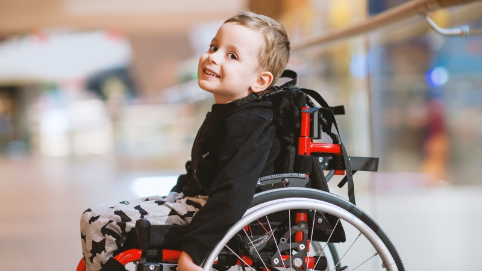
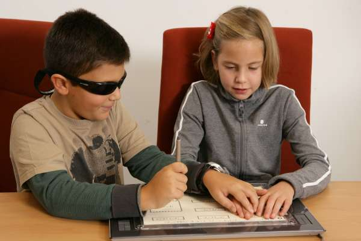
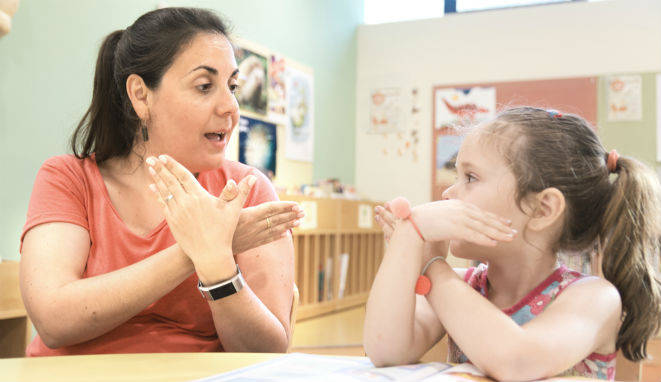
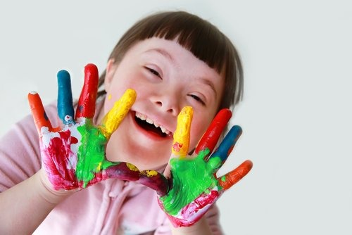
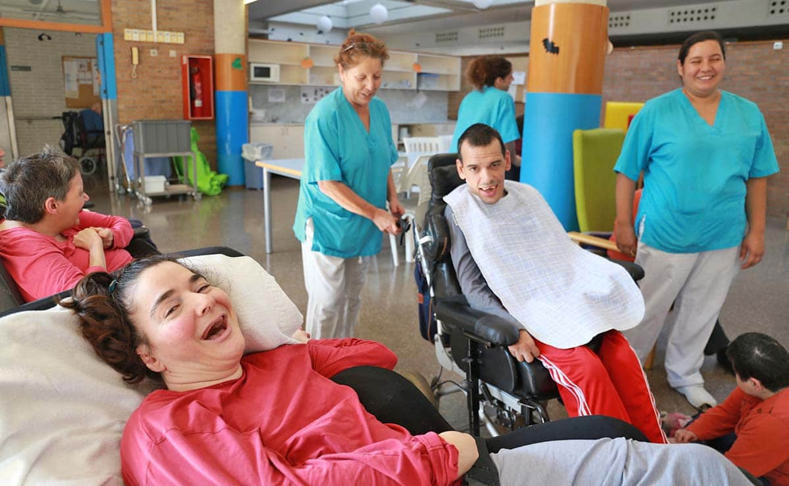
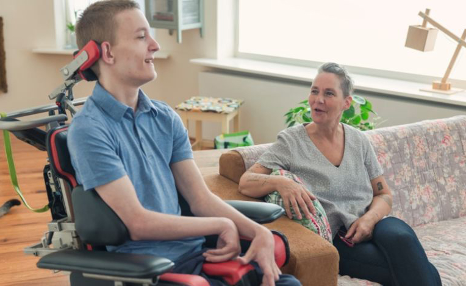

Tipos de discapacidad.
Principales tipos de discapacidad. En general se distinguen seis categorías de discapacidad:
Discapacidad motora
Cubre todos los trastornos que pueden causar deterioro parcial o total de las habilidades motoras, incluyendo la parte superior y/o inferior del cuerpo (dificultades para caminar, dificultad en el mantenimiento o el cambio de posición, y en la manipulación o la realización de determinadas acciones). Algunas discapacidades motoras de origen cerebral también pueden causar dificultades para expresarse, sin deterioro de la capacidad mental.
Discapacidad visual
Se refiere a las personas ciegas y también, en la mayoría de los casos, a las personas con trastornos severos de la visión. En algunas profesiones una persona daltónica puede ser reconocida como una persona con discapacidad.
Discapacidad auditiva
La pérdida de audición total es poco frecuente pues, al igual que con la discapacidad visual, la mayoría de las personas con discapacidad auditiva tienen “audición residual” que puede ser mejorada gracias al impulso de los audífonos. Dependiendo de las circunstancias, esta discapacidad puede llevar a dificultar la expresión por vía oral. Un buen número de personas sordas utilizan la lengua de signos y la lectura de labios para comunicarse.
Discapacidad intelectual
La discapacidad intelectual representa una dificultad en la comprensión y una limitación de la velocidad de las funciones mentales en términos de la comprensión, el conocimiento y la percepción. Estas discapacidades ocurren en diferentes grados y pueden ser perjudiciales para el proceso de retención de conocimientos, la atención, la comunicación, la autonomía social y profesional, la estabilidad y el comportamiento emocional.
Discapacidad psíquica
No es posible una definición comprensible, especialmente porque la terminología psiquiátrica (neurosis, psicosis…) sólo la dominan los psiquiatras. Sin embargo, podemos decir que las personas con dificultades psíquicas sufren de un malestar que se pueden traducir, a veces, en conductas perturbadoras para los demás porque son diferentes de las costumbres y hábitos habituales
Enfermedades discapacitantes
Todas las enfermedades respiratorias, cardiovasculares, digestivas y parasitarias (por ejemplo, diabetes, hemofilia, SIDA, cáncer, hipertiroidismo) pueden entrañar deficiencias o limitaciones en diversos grados. La enfermedad puede ser temporal, permanente o progresiva. Casi la mitad de las enfermedades discapacitantes tienen un origen respiratorio o cardiovascular.